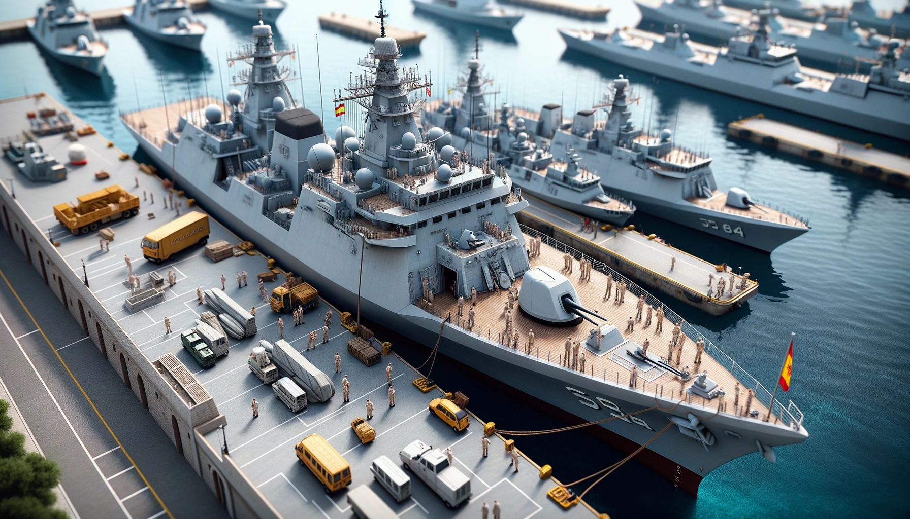

S-80
La Classe S-80 és una classe de submarins desenvolupats i construïts
per Navantia per a la Armada Espanyola. Representen una nova generació
de submarins amb capacitats avançades i estan dissenyats per
reemplaçar els submarins de la classe Agosta en servei amb la Armada.
Característiques i punts destacats de la Classe S-80: Disseny avançat:
Els submarins S-80 són considerats com alguns dels submarins
convencionals més grans i avançats del món, amb tecnologies d'última
generació. Propulsió anaeròbia: Una de les característiques més
notables d'aquesta classe és la seva capacitat de propulsió
independent d'aire (AIP) mitjançant un sistema de cèl·lules de
combustible, permetent als submarins romandre submergits durant
períodes més llargs sense necessitat de pujar a la superfície.
Armament: Estan equipats amb torpedes i míssils de creuer, oferint una
gran capacitat d'atac tant contra altres vaixells com contra objectius
en terra. Silenciós: El disseny dels S-80 posa èmfasi en la reducció
de la signatura acústica, fent-los més difícils de detectar per forces
enemigues. Desenvolupament i construcció: El desenvolupament de la
classe S-80 ha estat complex i ha experimentat diversos reptes,
incloent problemes amb el pes inicial dels submarins. No obstant això,
les modificacions necessàries han estat realitzades i el programa
continua endavant. Capacitat estratègica: Els submarins S-80
augmentaran significativament la capacitat submarina de la Armada
Espanyola, oferint una plataforma d'atac avançada i capacitat de
dissuasió. Modernització: Aquests submarins estan dissenyats per ser
actualitzats al llarg de la seva vida útil, permetent la incorporació
de noves tecnologies i millores. Impacte en la indústria naval: El
programa S-80 ha generat molta experiència i coneixement per a
l'indústria naval espanyola, posant Navantia a l'avantguarda del
disseny i construcció de submarins. La Classe S-80 representa el futur
de la capacitat submarina de la Armada Espanyola. Amb la seva
introducció, Espanya se situarà entre els països amb les tecnologies
submarines més avançades, reforçant la seva posició estratègica en el
context naval internacional.